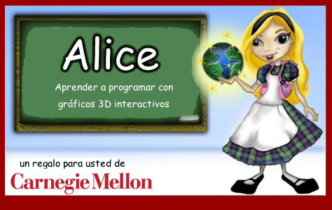
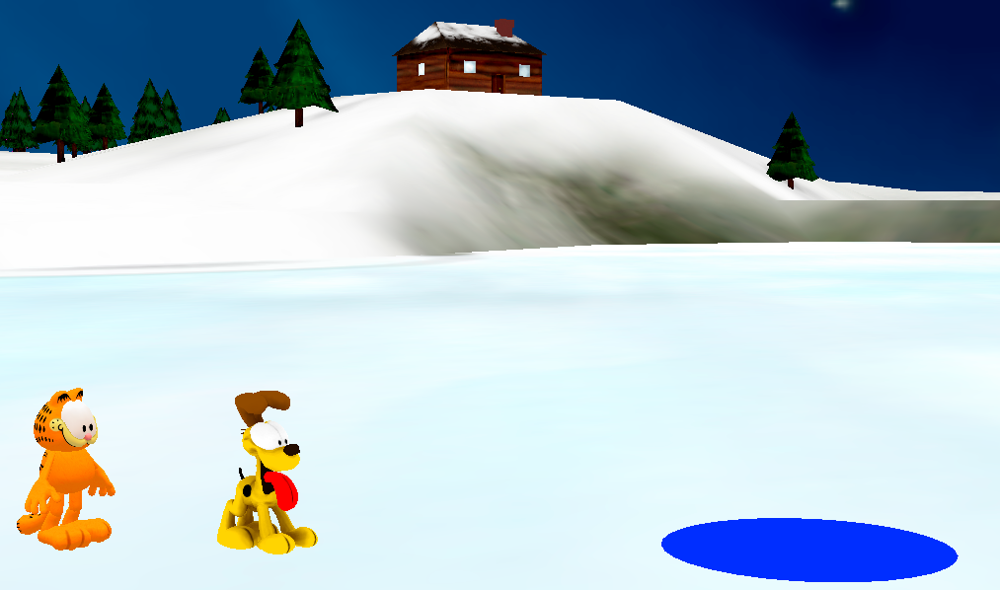

The Alice Project?

Using an innovative programming environment to support the creation of 3D animations, the Alice Project provides tools and materials for teaching and learning computational thinking, problem solving, and computer programming across a spectrum of ages and grade levels.
Read more...
New: Alice 3.3
We are excited to announce a new release of Alice 3 version 3.3. It is packed full of great new models, new features, and bug fixes.
Alice Software
Alice 3.x: Emphasis on object-oriented concepts and a full transition to the Java programming language.
Download...
Alice 2.x: For learning logical and computational thinking skills and fundamental principles of programming.
Download...
Oracle Academy
The Oracle Academy's Introduction to Computer Science curriculum uses Alice 3 to awaken student interest in computer science.The links below connect to sets of Alice 3 materials.
Alice 3 Self-Study
Introduction to Computer Science
Materials on Curriki.org
From Alice 3 to NetBeans IDE
Hour Of Code

With Alice and Garfield
The Hour of Code is a nationwide initiative by Computer Science Education Week[csedweek.org] and Code.org[code.org] to introduce millions of students to one hour of computer science and computer programming